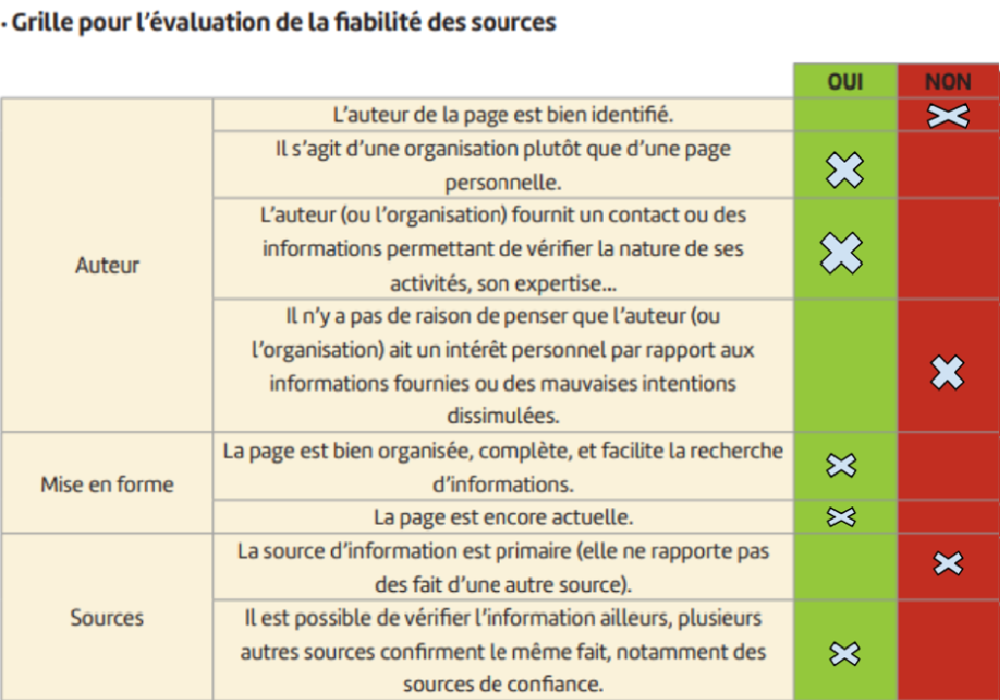
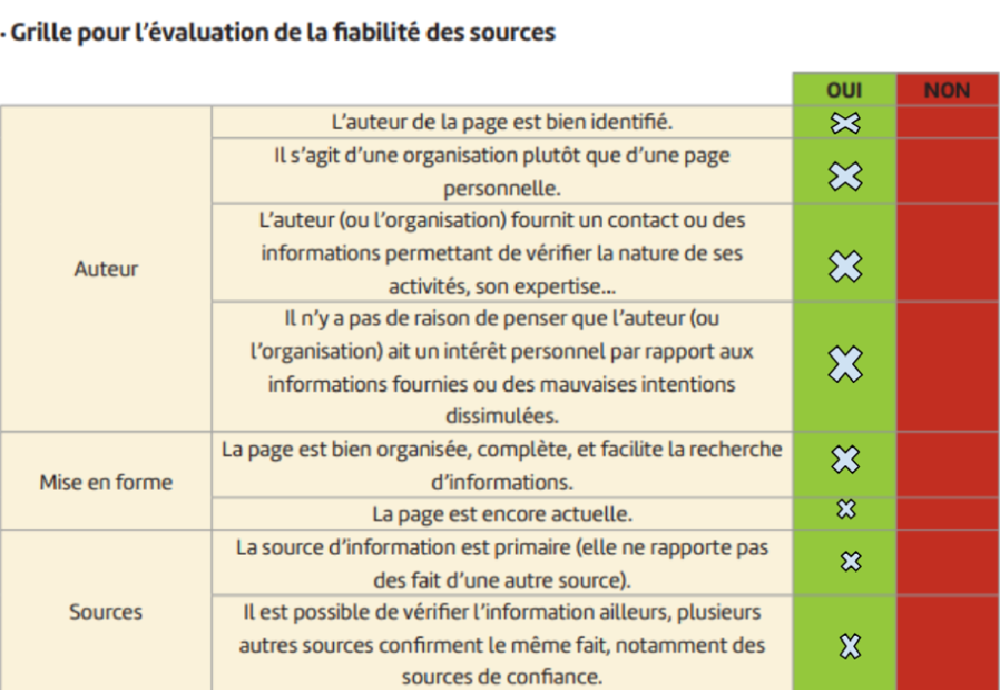

Introduction:
Premièrement, c’est quoi la Médecine Quantique?
La médecine quantique est une approche qui tente de combiner des principes de la physique quantique avec des concepts de médecine alternative dans le but de comprendre et de traiter les maladies. Cependant, il est important de noter que cette approche est controversée et n'est généralement pas acceptée par la communauté médicale et scientifique mainstream en raison du manque de preuves scientifiques solides.
Voici quelques concepts généraux associés à la médecine quantique :
Il est crucial de souligner que la plupart des concepts associés à la médecine quantique manquent de validation scientifique et que de nombreuses revendications ne reposent pas sur des preuves empiriques. La médecine conventionnelle repose sur des principes scientifiques établis et des essais cliniques rigoureux pour évaluer l'efficacité des traitements, et la médecine quantique ne satisfait souvent pas à ces critères. En conséquence, elle est généralement considérée avec scepticisme par la communauté médicale et scientifique.
Pour vérifier la fiabilité de cette technique, nous allons discuter des sites parlant de la médecine quantique et leur fiabilité.
Site 1: https://aromaquantisme.com/guerison-quantique/
Ce site est un site à but lucratif qui vend des biens et des services en rapport avec la médecine quantique. Donc il a tout intérêt de mettre en valeur la médecine quantique. Ceci va donc remettre en question la fiabilité de ce site.
Site 2: https://linequartz.com/node/90
Ce site est un site à but lucratif qui vend des services en rapport avec la médecine quantique. Donc il a tout intérêt de la mettre en valeur. Ceci va donc remettre en question la fiabilité de ce site.
Site 3: https://www.lemonde.fr
Le Monde est une société d’information très bien réputée, l’auteur n’a donc pas accès à mettre des articles personnels ni de mettre des fausses informations. Les auteurs sont connus et ont publié d’autres articles disputant des “Fake News”. Ce site est donc fiable.
Après avoir fait une étude de plusieurs articles, nous pouvons en déduire que la médecine quantique est une pseudo-science qui est un outil pour escroquerie. La médecine quantique est désormais un mensonge.